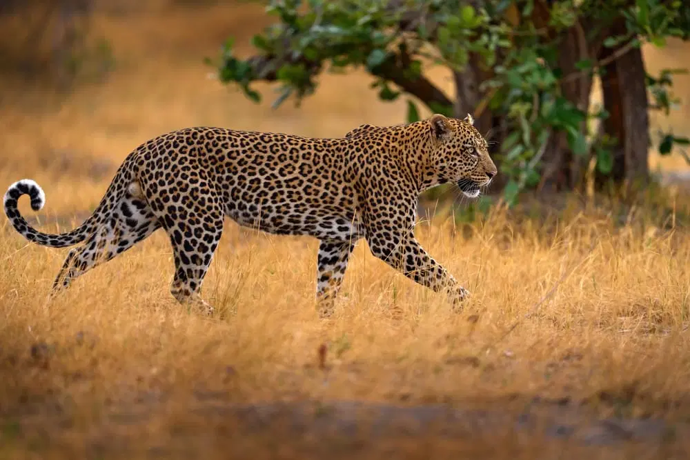
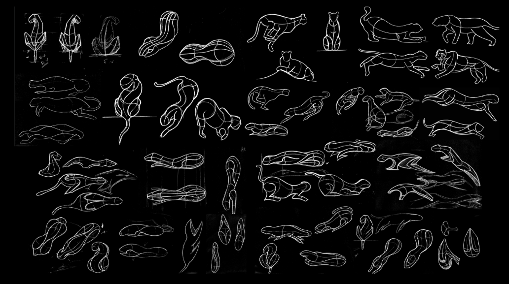
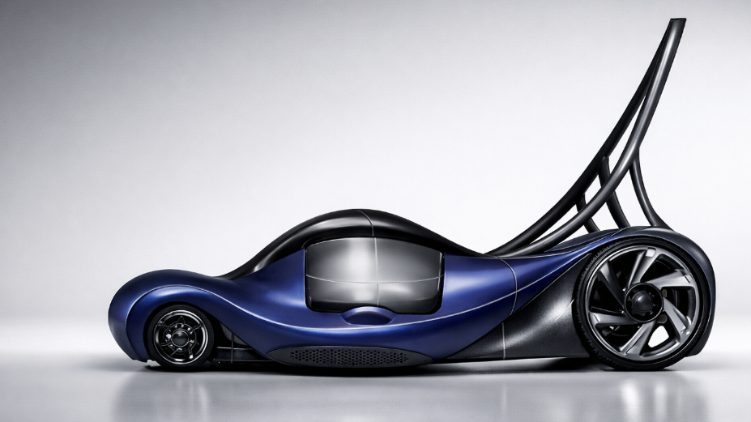
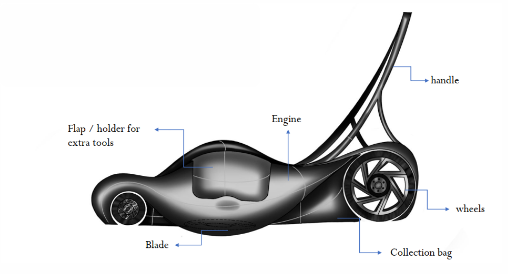

05 — Form Exploration
LEOPARD
"Translating natural attributes into product form through abstraction — inspired by the leopard's speed, muscular tension, and sleek motion to create a lawn mower that embodies predatory elegance."
The project explores translating natural attributes into product form through abstraction. Inspired by the leopard's speed, muscular tension, and sleek motion, the study focused on analyzing movement and body dynamics rather than literal imitation.
These qualities were distilled into flowing surfaces, tension-driven curves, and balanced proportions to create a form that expresses motion, strength, and elegance in a functional product.

Source animal study — muscular tension and body dynamics in motion

Form attributes — speed, coiled power, predatory precision
The abstraction process involved multiple stages — from biological analysis to abstract volume studies, leading to the final product form. The challenge was retaining the essence of movement without making the object literal or illustrative.
Studied leopard locomotion, muscle structure, silhouette variations in motion — running, crouching, pouncing.
Identified key formal qualities: coiled tension, fluid spine line, powerful haunches, low center of gravity.
Translated biological features into product-relevant volumes — flowing surfaces, tension-driven curves, dynamic proportions.
Integrated functional components within the sculptural form — blade, engine, handle, wheels, collection bag.

Ideation — extensive sketch exploration of leopard-inspired forms and volume studies
The final design translates the leopard's speed, muscular tension, and sleek fluidity into a dynamic lawn mower form. Through abstraction, flowing surfaces and tension-driven lines create a sense of motion, while integrated functional components maintain usability.

Final concept — LEOPARD lawn mower

Detail view — form and surface refinement
The final design translates the leopard's speed, muscular tension, and sleek fluidity into a dynamic lawn mower form. Through abstraction, flowing surfaces and tension-driven lines create a sense of motion, while integrated functional components maintain usability. The outcome embodies movement, strength, and precision through controlled organic form rather than literal imitation. This project demonstrates the power of biomorphic abstraction as a design methodology — finding the spirit of a subject and embedding it into form language.